Jersey Surf Drum and Bugle Corps
In 2017, I returned to the Jersey Surf Drum and Bugle Corps as a part of their media team. I photographed and created video content during the early June and mid August stretches of their tour traveling from Allentown, Pennsylvania to Indianapolis, Indiana.
At the completion of the summer, I had provided the corps with over 700 photos, still used today in marketing materials.
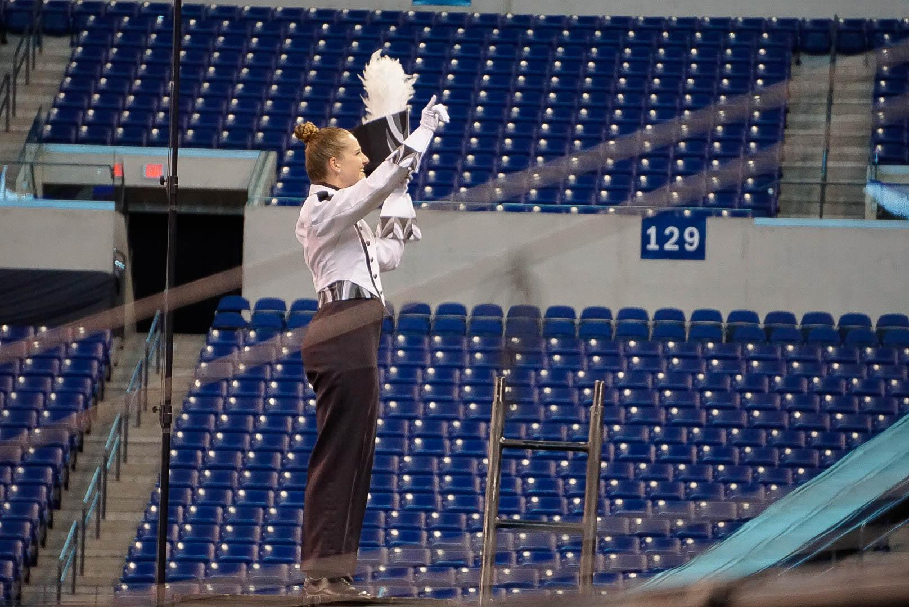
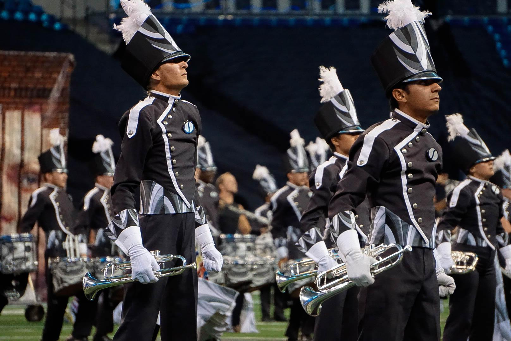
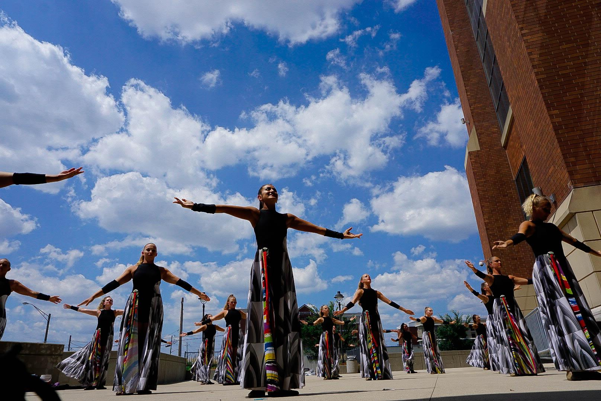
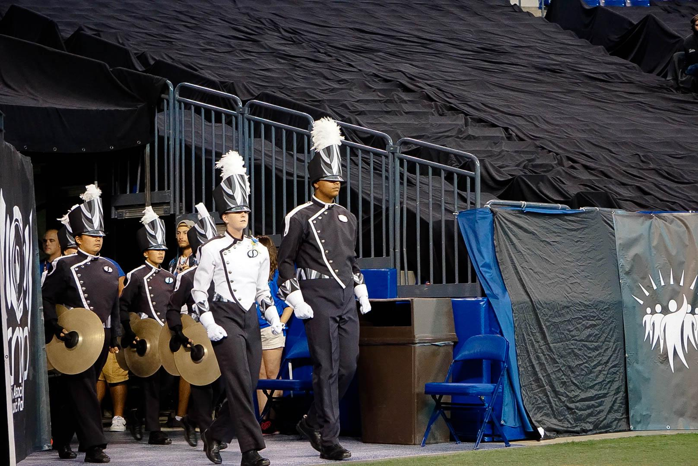

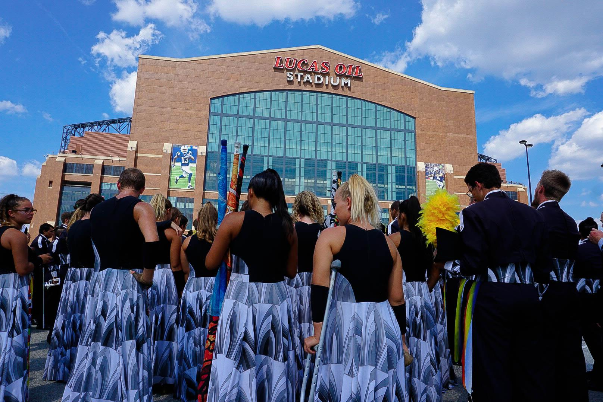
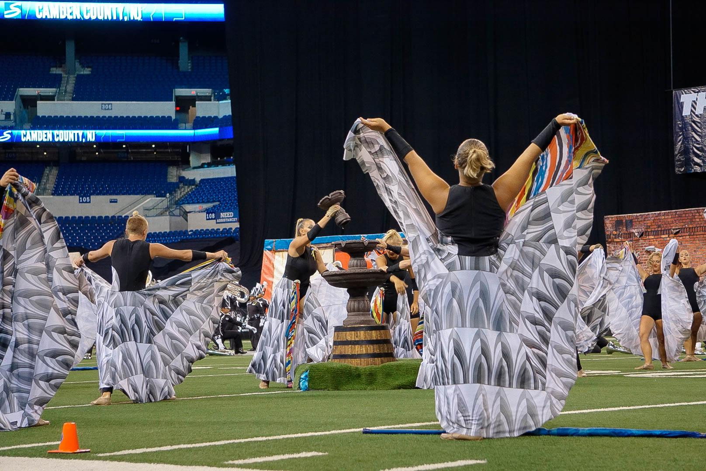
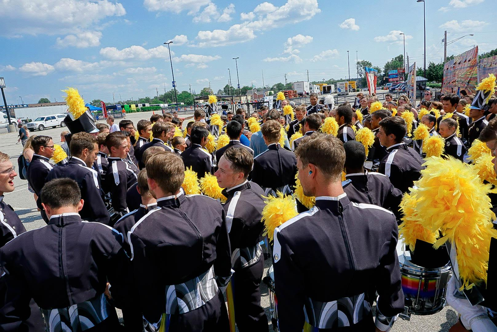
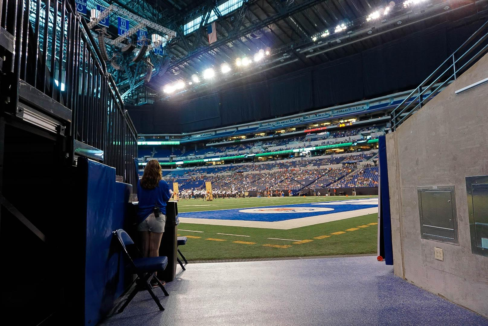
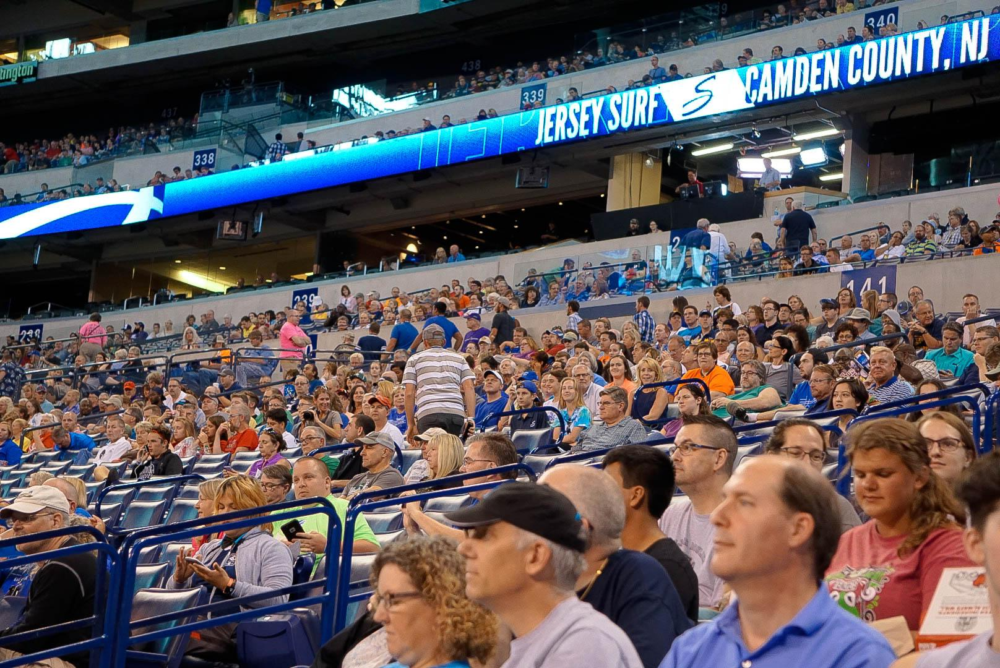
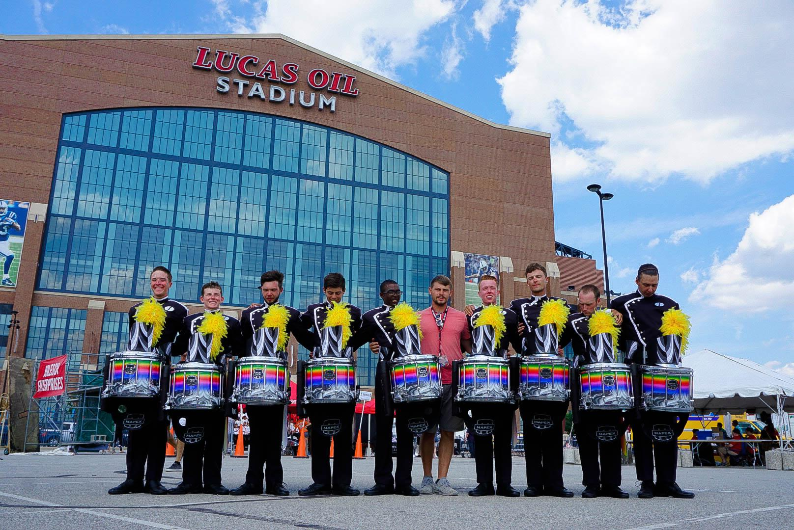
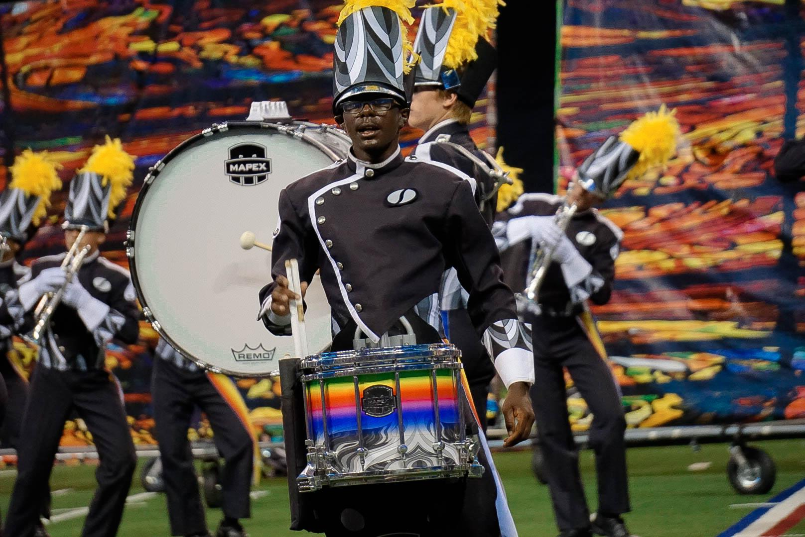
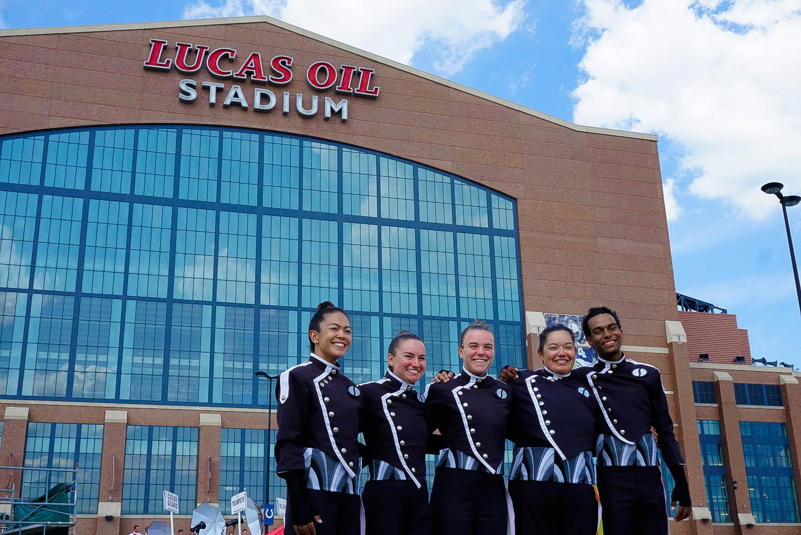
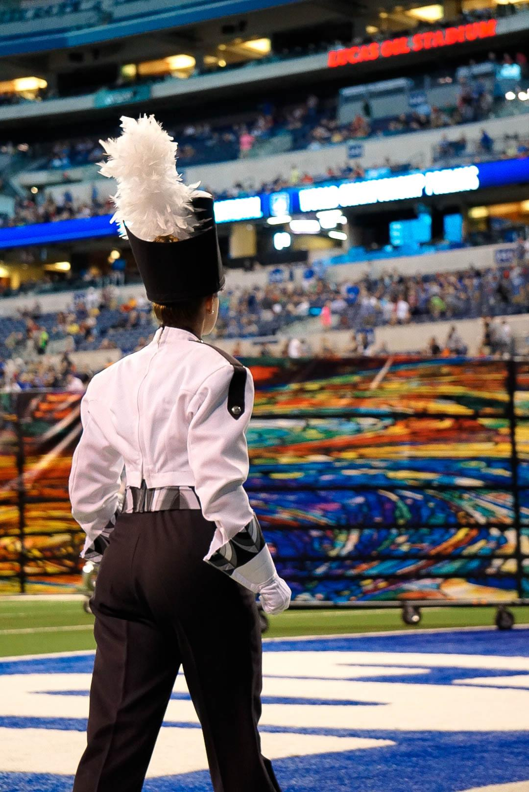
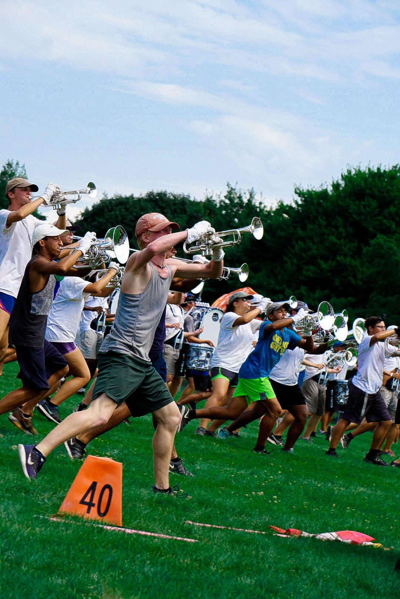
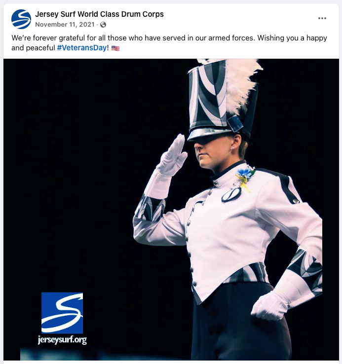